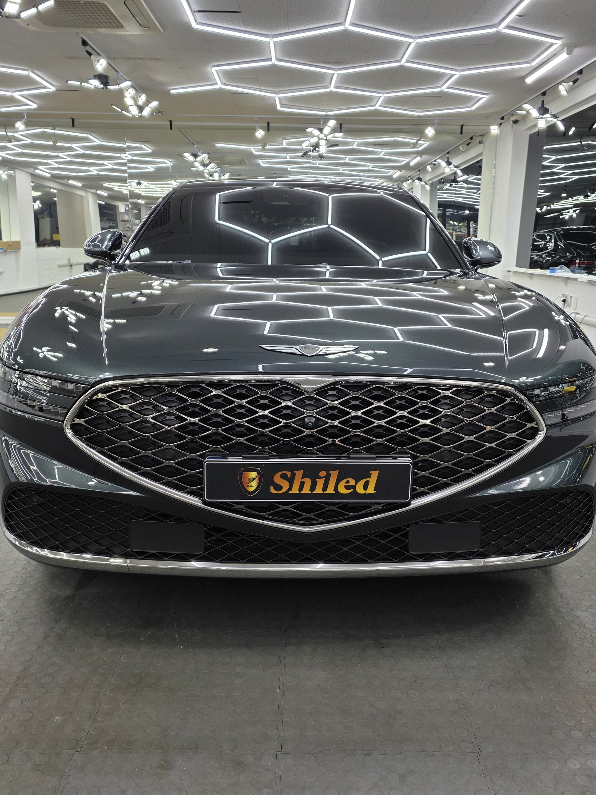
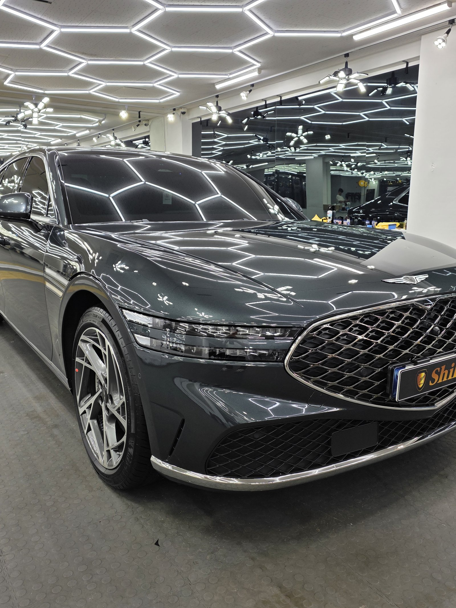
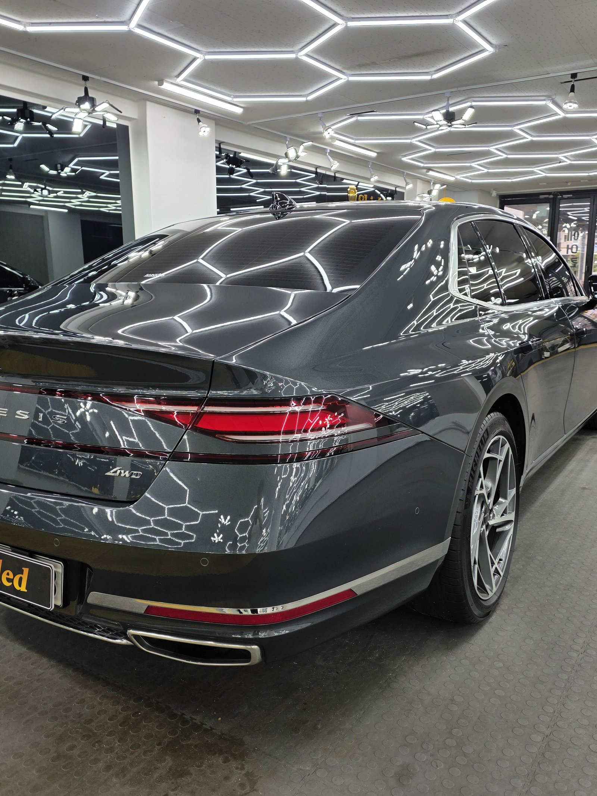
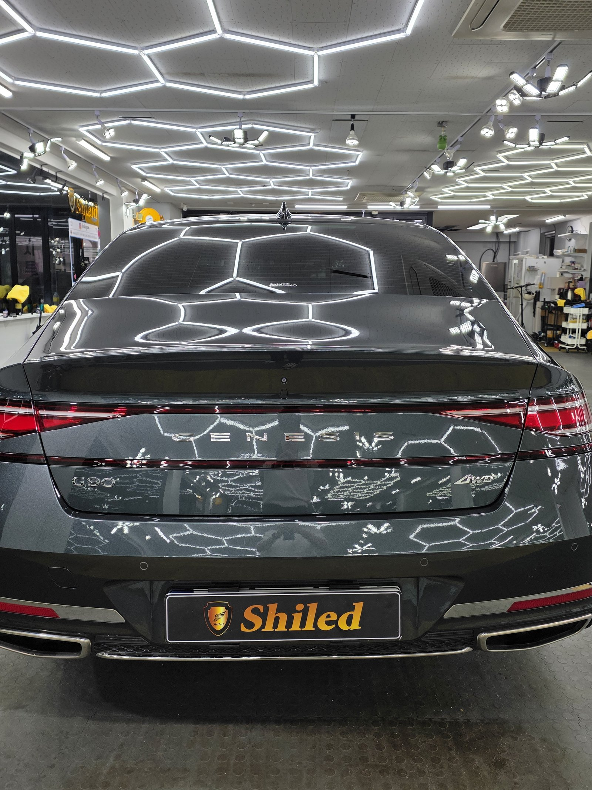
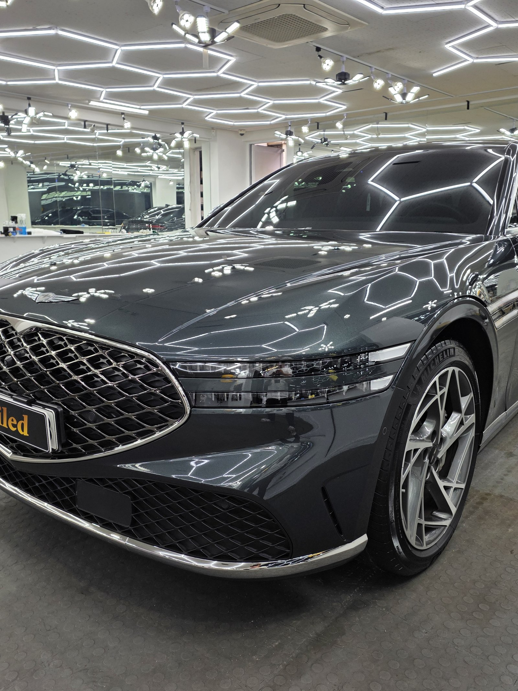
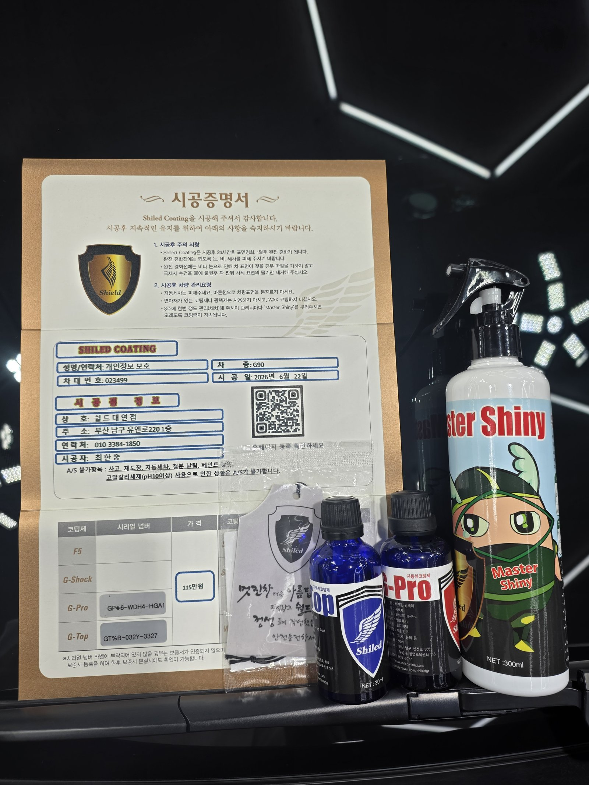
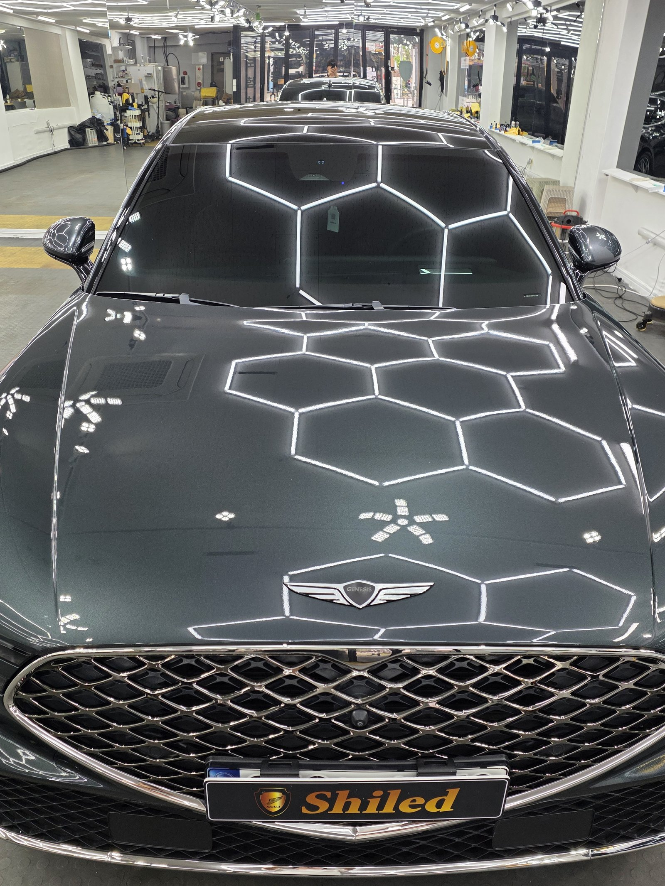

부산 쉴드광택에 들어온 제네시스 G90 그레이입니다. 플래그십 세단답게 차체가 크고 묵직합니다.
이 차는 G-PRO+G-TOP 듀얼코팅으로 진행했습니다.

왜 싱글이 아니라 듀얼인가
코팅은 무조건 여러 겹 올린다고 좋은 게 아닙니다. 차와 관리 여건에 맞춰야 합니다.
G90처럼 차체가 크고 관리 빈도가 상대적으로 낮은 플래그십 세단은, 스크래치를 막는 G-PRO의 경도와 오염·워터스팟을 막는 G-TOP의 발수·방오를 함께 올려두는 편이 관리 부담을 줄여줍니다. 그래서 듀얼코팅으로 잡았습니다.

코팅 전, 전처리가 9할입니다
좋은 코팅도 더러운 바탕 위에 올리면 의미가 없습니다.
디테일링 세차로 표면 오염을 걷어내고 탈지까지 마친 뒤에야 코팅을 올릴 면이 됩니다. 차체가 큰 차일수록 이 과정을 생략하지 않는 게 중요합니다.
기술자의 팁
그레이는 무채색이라 스크래치 대비 오염이 상대적으로 눈에 덜 띄는 편이지만, 그만큼 방치하면 관리 시점을 놓치기 쉽습니다. G-TOP의 발수력이 오염 자체를 덜 붙게 만들어 이 부분을 보완합니다.


마감 후
헥사 조명이 도장면 위로 왜곡 없이 맺힙니다. 코팅막이 고르게 올라갔다는 증거입니다.
그레이 특유의 차분한 톤 위에, 단단한 보호막과 발수막을 함께 입힌 상태입니다.

시공증명서를 함께 드립니다
모든 시공 차량에 시공증명서를 드립니다.
차종·시공일·코팅제 시리얼 번호가 적혀 있고, 홈페이지에 등록해 보증을 받으실 수 있습니다. 이 차는 G-PRO+G-TOP 듀얼코팅으로 기록돼 있습니다.

모든 시공 차량에 시공증명서와 전용 관리제를 함께 드립니다

자주 묻는 질문
Q. 싱글·듀얼·트리플코팅은 어떻게 선택하나요?
A. 차와 운전 습관에 맞춰 정합니다. 스크래치 내성만 원하면 G-PRO 싱글, 발수·방오까지 챙기고 싶으면 듀얼, 색감까지 전부 잡고 싶으면 트리플을 권합니다.
Q. G90 같은 대형 세단에는 왜 듀얼코팅을 권하나요?
A. 이 차는 G-PRO+G-TOP 듀얼코팅으로 진행했습니다. 차체가 크고 관리 빈도가 낮은 편인 플래그십 세단일수록, 경도와 발수·방오를 함께 올려 관리 부담을 줄이는 편이 유리합니다.
Q. 코팅 전 전처리는 어떻게 진행하나요?
A. 디테일링 세차로 표면 오염을 걷어내고 탈지까지 마친 뒤에 코팅을 올립니다. 깨끗한 바탕 위에 올려야 코팅이 제대로 밀착합니다.
Q. 쉴드광택 위치와 예약은 어떻게 하나요?
A. 부산 남구 유엔로220 1F 쉴드광택입니다. 예약·상담은 010-3384-1850, 대표 최한중이 직접 상담하고 책임 시공합니다.
차가 클수록, 관리가 뜸할수록 시작점이 중요합니다.
제품을 직접 만드는 사람이 직접 시공합니다.
부산에서 유리막코팅을 고민 중이시면 편하게 연락 주십시오.
어떤 차를 타냐보다 어떻게 타냐가 중요합니다~!
📞 010-3384-1850 견적 문의쉴드광택 · 부산 남구 유엔로220 1F · 대표 최한중